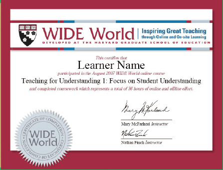
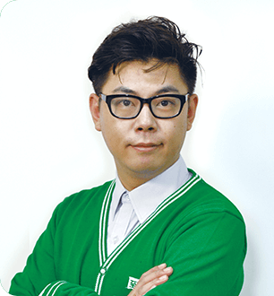
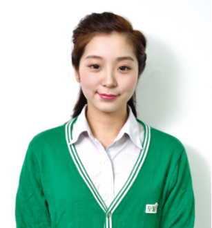

至慧之师

至慧学堂严格筛选教师，定期考核，并挑选优秀教师参加哈佛教育学院Teaching For Understanding（为理解而教）课程培训。我们悉心体会孩子的内心世界，先做观察者，再做引导者，以恒心、责任心、创新、爱心、童心，五心师德为宗旨，全力帮助激发每个孩子的潜能。

张杰
 毕业于华东师范大学，学前教育专业，受邀参加上海电视台"幼升小名师"栏目专访。"解放天性"的授课模式深受学员和家长的喜爱，获得至慧学堂"莎莉文奖"、"孺子牛奖"等众多奖项。
毕业于华东师范大学，学前教育专业，受邀参加上海电视台"幼升小名师"栏目专访。"解放天性"的授课模式深受学员和家长的喜爱，获得至慧学堂"莎莉文奖"、"孺子牛奖"等众多奖项。

顾婷婷
投身幼儿教育行业5年以上，关爱孩子各方面的成长，曾获得新浪"全国五星金牌教师"奖项。对孩子在幼升小阶段的教学有独特的授课方式，给孩子更多的发挥空间。